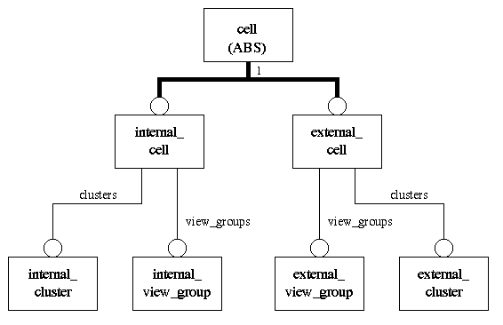

An EDIF description is expressed in the form of a hierarchy, abstract at its higher levels, and becoming progressively more detailed as it descends the hierarchy. At the highest level of this structure, an edif description may contain several designs and several libraries of cell definitions. Each library is a collection of cells and reusable templates which are grouped according to a set of common characteristics. A cell is the main design object which may be instantiated later in another cell to build a design hierarchy. These concepts are elaborated in the following sections.
An EDIF library is a grouping of cells and reusable templates according to some set of common characteristics. This grouping is arbitrary except for the technology information which is shared by all cells and templates within the library. The technology information includes definitions of figure_groups.
EDIF libraries may be locally defined; that is the descriptions of constituent cells and templates are included in the current EDIF file. Libraries may also be external which implies that the details of the constituent cells and templates are not available at all in the current EDIF file.
The model for library can be found in the library_model schema. A library is classified into internal_library and external_library. An internal_library may contain implementation information, whereas an external_library does not include implementation details.
In EDIF Version 2 0 0, each cell has a cellType attribute which describes the use of the cell. The cellType can be either GENERIC, TIE or RIPPER. However, TIE and RIPPER cells are not real design objects and they exist only to support the description of connectivity information.
In EDIF Version 3 0 0, the underlying concept of a cell has been tidied up; rippers and ties are dealt with as connectivity objects. Consequently, cells are untyped and do not require the cellType attribute.
The model for cell can be found in the hierarchy_model schema. A cell is classified into internal_cell and external_cell. An internal_cell may contain implementation information, whereas an external_cell does not include implementation details.
In EDIF Version 2 0 0, a cell may contain many views of the same or different types. Each view is structured as an interface and an optional contents. The interface defines objects which can be seen and relationships which are guaranteed to be true for all instances of the view. Such objects include the ports or the symbol of the cell.
There are a number of changes in the structuring of views in cell definitions between EDIF Version 2 0 0 and EDIF Version 3 0 0. The reasons for these changes include :
In EDIF Version 2 0 0, a symbol is embedded within the interface of views of certain types. In EDIF 3 0 0, the symbol associated with a cell is not embedded within the interface of a view. Instead, a symbol is recognised as a form of cell representation in its own right. Furthermore, in EDIF Version 2 0 0, the interface is contained within the view. In EDIF 3 0 0, the interface is removed from within view. The notion of cluster is introduced. The model for cluster can be found in the hierarchy_model schema. A cluster defines an interface and groups together the cell_representations (i.e. views and symbols) which share this common interface. A cell may contain many clusters. Since views and symbols are defined directly inside cluster, symbols may be shared between views in the same cluster. A cluster is the object which may be instantiated in another cell view to build a design hierarchy. As mentioned before, a cell is classified into internal_cell and external_cell. An internal_cell defines a set of internal_clusters, whereas an external_cell defines a set of external_clusters. Only internal_cell_representations (i.e. internal views or internal symbols) are allowed in an internal_cluster, and only external_cell_representations (i.e. external views or external symbols) are allowed in an external_cluster.
At present, the following types of view are supported : connectivity (analogous to the EDIF Version 2 0 0 netlist viewtype), schematic, symboliclayout, masklayout, pcblayout, logicmodel and behavior. The view of type graphic is removed and is replaced by reusable graphics objects . In addition, in order to simplify the transfer process, different types of symbols are explicitly identified. There is a symbol type for each type of view for which a coordinate space exists, i.e. schematic, masklayout, pcblayout and symboliclayout.
In addition, views or symbols may have a particularly close relationship based on factors other than sharing a common interface. There are various reasons for this close relationship; for example, a netlist may be related to a hierarchical schematic, or a flattened netlist may be related to a derived layout implementation. This relationship can be captured by the concept of view_group in EDIF Version 3 0 0. The model for view_group can be found in the hierarchy_model schema. A cell may contain many view_groups. A view_group groups together the relevant cell_representations within the same cell. Simple annotation is provided within a view_group to indicate the reason for the grouping. As for cluster, a view_group can be either an internal_view_group or an external_view_group. An internal_view_group indicates a relationship between internal_cell_representations belonging to the same internal_cell. An external_view_group indicates a relationship between external_cell_representations belonging to the same external_cell.
The relationship between cell, cluster and view_group is shown in figure 2.1.

A cell_representation specifies a representation or perspective of a cell. It can either be a view or a symbol. A cell_representation obtains its interface definition from its containing cluster. A direct relationship may be established between two cell_representations. This relationship may be used to support basic versioning and data management control. Any cell_representation may be a new version of another cell_representation, or may be derived from another cell_representation. When one view or symbol is defined to be a new version of another view or symbol, the types of the two views or symbols must be the same. On the other hand, when one view or symbol is defined to be derived from another view or symbol, the views or symbols may be of the same or of different types.
Ports and port_bundles are defined in the interface of a cluster of a cell. These objects represent the only places where a connection can be made to a cell. The models for master_port and master_port_bundle can be found in the hierarchy_model schema.
A master_port describes a port in the interface of a cluster. The size of a master_port is always one. It may have a direction characteristic, which can be either input, output or bidirectional. In addition, it has information about its external load capacitance, delays for the given set of transitions and its designator name.
Similarly, a master_port_bundle describes a port_bundle in the interface of a cluster. The purpose of master_port_bundle is to build structured ports. In EDIF 3 0 0 a master_port_bundle explicitly groups master_ports or other master_port_bundles defined in the same interface. The same master_port may be referenced by more than one master_port_bundle. However, the same master_port is not allowed to be referenced more than once by a master_port_bundle.
In EDIF Version 3 0 0, cluster is the object which is instanced in another cell view to build a design hierarchy. An instance is defined by referencing a cluster in a cell. Since the cluster defines the interface of the instantiated cell, it is possible to establish connectivity between the instance and its instantiating view.
The benefit of this instantiation mechanism is that there is no need to decide which specific representation of a cell is being used in the instantiating view. The decision to select a particular representation (which may be a view or a symbol) is delayed until the instantiating view is implemented. For example, a schematic view may contain instances of clusters of other cells. When that schematic view is implemented, instances are configured by selecting suitable symbol representations and placing them on pages.
The model for instance can be found in the hierarchy_model schema. Every instance has a width attribute. If the width is greater than 1, it represents an arrayed instance.